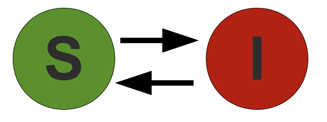

7 Dec 23 - Activity: Modeling#
While this course has focused on physics and physical systems, the same techniques and approaches that you have developed, can be used to investigate systems in other fields. In this activity, we will demonstrate an initial model, and then ask you to complicate it with the ideas you have developed. Consider the critical issue of a potential zombie apocalypse.
While this might seem a little silly, the models and dynamics of a zombie apocalypse can be adapted from the models of disease spread. In fact, the CDC had a page dedicated to this topic. For those who might be really interested, the behavior fo zombie hoards can be modeled like flocking birds or schools of fish.
What are we doing?#
Saving the world, obviously.
Non-Commercial Link: https://inv.tux.pizza/watch?v=MQ8ZKw7YIfQ
Commercial Link: https://youtube.com/watch?v=MQ8ZKw7YIfQ
Where do we start? Compartmental models#
The modeling of epidemics follows from a few simple considerations:
the population under consideration ca be sufficiently compartmentalized into distinct groups, and
there is a rate (fixed or variable) at which individuals can move between compartments.
The compartmental model is a simple way to model the spread of a disease and where we will start.
The SIS model#
The Susceptible-Infected-Susceptible (SIS) model describes an epidemic in which healthy individuals (Susceptibles) can become infected with the disease in question (Infected). The infected individuals can be cured but retain no natural immunity to the disease (i.e., become susceptible again). The figure below illustrates the compartments and flux of individuals in the SIS model. Such models are suitable for bacterial infections.

The dynamics are given by,
The rate at which susceptibles are infected is related to the contact rate (\(\beta\)). The recovery rate (\(\gamma\)) describes how quickly individuals are cured. The rate equations that govern this model are two ordinary non-linear differential equations. Here we have neglected the birth and death rates of the populations by making the approximation the epidemic occurs very quickly. If we assume there’s a total number of people \(N\), then we can write these equations as:
For given values of \(\beta\) and \(\gamma\), we can solve these equations numerically.
The SIR model#
The Susceptible-Infected-Recovered (SIR) model describes an epidemic in which healthy individuals (Susceptibles) can become infected with the disease in question (Infected). The infected individuals can be cured and retain a natural immunity to the disease (Recovered). The figure below illustrates the compartments and flux of individuals in the SIR model. Such models are suitable for viral infections. We can modify this model for the zombies.

The transfer rates can be defined for the SIR model as was for the SIS model. The rate equations that govern this model are three ordinary non-linear differential equations. Again, we have neglected the birth and death rates of the populations by making the approximation the epidemic occurs very quickly.
Again, for given values of \(\beta\) and \(\gamma\), we can solve these equations numerically.
The SZR model#
This SZR model treats the population as compartmentalized into the 3 groups: Susceptible (S), Zombie (Z), and Removed (R). Movement between these groups is illustrated below.

Susceptibles can become zombies through an encounter with a zombie. Zombies can move to the removed compartment by being destroyed in classic manners (e.g., Dawn of the Dead). Susceptibles can move to the removed compartment through death by a non-zombie encounter. Finally, removed individuals can become zombies through typical resurrection techniques (e.g., Live and Let Die).
The deterministic model includes transfer rates we have seen before, but we include the rates of transfer from susceptible to removed (\(\delta\)) and removed to zombie (\(\xi\)).
For given values of values of \(\beta\), \(\gamma\), \(\delta\), and \(\xi\), we can solve these equations numerically.
Tasks for today#
✅ Do this
Work with your group to model the SIS and SIR systems. Choose values or non-dimensionalize the equations to reduce the number of parameters.
Consider the many tools we have used to investigate ODEs. What more information can you extract from these models? What are the limitations of these models?
Do the same for the SZR model. What are the limitations of this model? What are the advantages of this model?
## your code here
Challenges#
✅ Do this
Challenge: Build an SZQR model where the CDC quarantines some number of susecptibles and zombies (at different rates). How does this change the dynamics of the system?
Challenge: Introduce stochasticity into the model. What happened if instead there were a probability of infection or death? How does this change the dynamics of the system? If you are interested in this, look at this paper.
## your code here